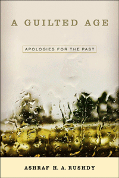

<body bgcolor="#FFFFFF" text="#000000" link="#0000FF" vlink="#CC0000" alink="#CC0000"><center><hr width="350" size="1" align="center" noshade>The study and meaning of public apologies that have become frequent in the contemporary world<hr width="350" size="1" align="center" noshade><p><a href="https://cdcshoppingcart.uchicago.edu/Cart/ChicagoBook.aspx?ISBN=9781439913215&&PRESS=temple" target="_top">Buy this book!</a> | <a href="https://cdcshoppingcart.uchicago.edu/Cart/Cart.aspx?PRESS=temple" target="_top">View Cart</a> | <a href="https://cdcshoppingcart.uchicago.edu/Cart/Cart.aspx?PRESS=temple" target="_top">Check Out</a></p><p></p></center><!--none//--><h1>A Guilted Age</h1>
<H2>Apologies for the Past</H2>
<h3>Ashraf H. A. Rushdy</h3>
<P>cloth 1-4399-1321-8 $89.50, Oct 15, <FONT COLOR=#990033>Available</FONT>
<br>paper 1-4399-1322-6 $27.95, Oct 15, <FONT COLOR=#990033>Available</FONT>
<br>Electronic Book 1-4399-1323-4 $27.95 <FONT COLOR=#990033>Available</FONT>
<BR> 232 pp
6 x 9
</P><BLOCKQUOTE><I>"</i>A Guilted Age<i> exhaustively researched, analyzing texts and arguments from numerous disciplines—philosophy, politics, history, and religion—with sensitivity and insight. Rushdy writes beautifully and with a strong and confident authorial voice. His argument concerning the differences between apologizing and mourning is especially intriguing. This is a learned and humane work."</i> <br>&#151<b>Brian Weiner</b>, Associate Professor of Politics at the University of San Francisco and author of <i>Sins of the Parents: The Politics of National Apologies in the United States</i></I></BLOCKQUOTE>
<P>Public apologies have become increasingly common scenes and representative moments in what appears to be a global process of forgiveness. The apology-forgiveness dynamic is familiar to all of us, but what do these rituals of atonement mean when they are applied to political and historical events?
<P>In his timely, topical, and incisive book <I>A Guilted Age</I>, Ashraf Rushdy argues that the proliferation of apologies by politicians, nations, and churches for past events—such as American slavery or the Holocaust—can be understood as a historical phenomenon. In our post–World War II world, Rushdy claims that we live in a “guilted age.”
<P><I>A Guilted Age</I> identifies the two major forms of apologies—political and historical—and Rushdy defines the dynamics and strategies of each, showing how the evolution of one led to the other. In doing so, he reveals what apology and forgiveness do to the past events they respectively apologize for and forgive—and what happens when they fail.
<BR>&nbsp;<h2>Excerpt</h2><P>Excerpt available at <a href="http://www.temple.edu/tempress">www.temple.edu/tempress</a></p>
<BR>&nbsp;<h2>Reviews</h2>
<p><i>"</i>A Guilted Age<i> is an important and extremely timely book—a significant contribution to current work on state apologies and questions of reparation. Rushdy offers not only a useful read of major books on apology, forgiveness, and retributive and restorative justice but also a comprehensive synthesis of the work that has been done and a new way of thinking about the contexts, limits, and audiences for public apologies. His case studies are carefully chosen, and his analytical and critical intervention will help frame renewed and vigorous discussion."</i> <br>&#151<b>Christina Sharpe</b>, Associate Professor of English, American Studies, and Studies in Race, Colonialism, and Diaspora at Tufts University and author of <i>Monstrous Intimacies: Making Post-slavery Subjects</i>
<p><i>"[A] level-headed and stimulating essay.... This book, by usefully identifying the culture of guilt, provides an essential starting point for debating these difficult issues."</i><br>&#151<i><b>Times Higher Education</i></b>
<p><i>"Rushdy argues not only that the present age is an age of apology—the 'guilted age'—but that this age of apology is relatively recent.... A fine, well-written book, this volume is especially engaging in the way that Rushdy works across disciplinary boundaries—history, literature, philosophy, rhetoric—to illuminate issues of inherited responsibility, historical continuity, and the soliloquy of apology.... Summing Up: Highly recommended."</i>
<br>&#151<b><i>Choice</i></b>
<BR>&nbsp;<h2>Contents</h2><P>
<P>Preface
<br>Acknowledgments
<br>
<br>Introduction
<br>
<br>1. The Guilted Age
<br>2. Political Apologies I
<br>3. Political Apologies II
<br>4. Historical Apologies I
<br>5. Historical Apologies II
<br>6. The Metaphysics of Undoing
<br>7. The Concrete Past: Memorials
<br>
<br>Conclusion
<br>
<br>Notes
<br>Index
</P><BR>&nbsp;<H2>About the Author(s)</H2>
<P><b>Ashraf H. A. Rushdy</b>is the Benjamin Waite Professor of the English Language, a Professor of African American Studies, and the Academic Secretary at Wesleyan University. He is the author of <I>The Empty Garden: The Subject of Late Milton</I>, <I>Neo-Slave Narratives: Studies in the Social Logic of a Literary Form</I>, <I>Remembering Generations: Race and Family in Contemporary African American Fiction</I>, <I>American Lynching</I>, and <I>The End of American Lynching</I>.</P>
<BR><H2>Subject Categories</H2>
<p><A HREF="/tempress/sociology.html" TARGET="_top">Sociology</a>
<BR><A HREF="/tempress/philosophy.html" TARGET="_top">Philosophy and Ethics</a>
<BR><A HREF="/tempress/political.html" TARGET="_top">Political Science and Public Policy</a>
</p>
<p align="center"><a href="https://cdcshoppingcart.uchicago.edu/Cart/ChicagoBook.aspx?ISBN=9781439913215&&PRESS=temple" target="_top">Buy this book!</a> | <a href="https://cdcshoppingcart.uchicago.edu/Cart/Cart.aspx?PRESS=temple" target="_top">View Cart</a> | <a href="https://cdcshoppingcart.uchicago.edu/Cart/Cart.aspx?PRESS=temple" target="_top">Check Out</a></p><p><font face="Arial" size="1"><a href="copyright.html" onMouseOver="window.status='Web Copyright Policy';return true;" onMouseOut="window.status=''" title="Web Copyright Policy">&copy;</a> 2016 <a href="http://www.temple.edu" target="new" onMouseOver="window.status='Link to Temple University home page';return true;" onMouseOut="window.status=''" title="Link to Temple University home page">Temple University</a>. All Rights Reserved. http://www.temple.edu/tempress/titles/2389_reg.html</font></p>